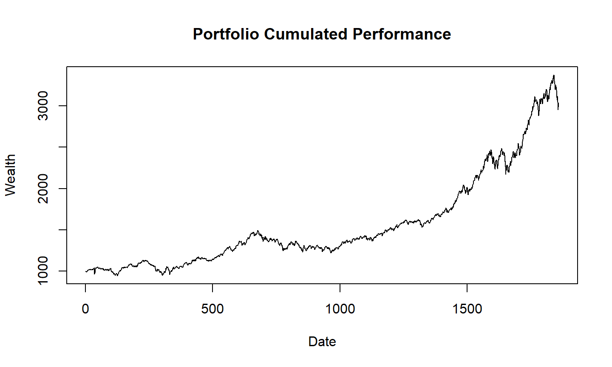

Otimização no R
Otimização linear
Otimização quadrática
Otimização não-linear
Bases de Dados
Retornos e Valor do Portfólio
02 de junho de 2023
Otimização no R
Otimização linear
Otimização quadrática
Otimização não-linear
Bases de Dados
Retornos e Valor do Portfólio
Markowitz (1952) foi um dos primeiros a ver a alocação de porfólios como um problema de otimização. Desde então, esse tópico tem sido bastante estudado e vários modelos foram propostos.
Alocação de portfólios pode ser visto como um método para maximizar o grau de satisfação do investidor.
Por exemplo, um investidor pode estar procurando um portfólio que minimize o risco representado por um estimador da covariância dos retornos diários de ações, enquanto outro investidor pode querer medir o risco como a redução da riqueza em um determinado tempo.
Primeiro, vamos ver como fazer otimização no R, o que permite que o usuário implemente sua própria rotina para outros processos.
Depois, serão apresentados exemplos simples para serem entendidos, mas que podem ser estendidos para modelos mais complexos.
Vários algoritmos e pacotes existem para resolver problemas de otimização. Vamos focar em um pacote para cada tipo de problema, mas estejam cientes de que existem outras rotinas para um mesmo tipo de otimização.
As rotinas de otimização não-lineares que já estão na base do R são: optim() e nlminb(), que acomodam apenas restrições simples.
Outros pacotes: Rglpk, quadprog, Rsolnp, DEoptim, robustbase.
Seja \(\mathbf x \in \mathbb{R}^n\) um vetor de variáveis sujeitas a restrições dadas por equações e inequações lineares.
O problema de otimização linear pode ser escrito como:
\[\mbox{minimize}_{\mathbf{x}} \quad \mathbf c' \mathbf{x} \\[.2cm] \mbox{sujeito a:} \quad \mathbf{A}_{eq} \,\mathbf x = \mathbf a_{eq} \quad\mbox{ e }\\ \qquad \quad \mathbf A \, \mathbf x \geq \mathbf a \] onde \(\mathbf{A}_{eq}\) e \(\mathbf{a}_{eq}\) são a matriz e o vetor de coeficientes da restrição da igualdade, \(\mathbf{A}\) e \(\mathbf{a}\) são os coeficientes da restrição da desigualdade, e \(\mathbf{c}\) é o vetor de coeficientes da função que desejamos maximizar/minimizar.
https://cran.r-project.org/web/views/Optimization.html
Rglpk que tem funções para otimização linear e programação inteira mista.args(Rglpk_solve_LP)
## function (obj, mat, dir, rhs, bounds = NULL, types = NULL, max = FALSE, ## control = list(), ...) ## NULL
onde obj contém os coeficientes da função que queremos otimizar, mat é a matriz com os coeficientes das restrições, dir descreve as direções e tipos de desiguldades, e rhs é o vetor do lado direito (“right hand side”) das restrições.
LP_solver que está no código da aula prepara os objetos no formato correto e executa a otimização linear de acordo com a fórmula do slide anterior.Comparado à otimização linear, os problemas de otimização quadrática contém um termo quadrático (\(\mathbf{x}'\mathbf{Q}\,\mathbf{x}\)) na função que desejamos maximizar/minimizar.
Os demais parâmetros permanecem os mesmos.
\[\mbox{minimize}_{\mathbf{x}} \quad \mathbf c' \mathbf{x} + \mathbf{x}'\mathbf{Q}\,\mathbf{x} \\[.2cm] \mbox{sujeito a:} \quad \mathbf{A}_{eq} \,\mathbf x = \mathbf a_{eq} \quad\mbox{ e } \\ \qquad \quad \mathbf A \, \mathbf x \geq \mathbf a \]
https://cran.r-project.org/web/views/Optimization.html
quadprog.solve.QP encontra soluções para problemas da forma \(\min_{\mathbf{x}} \left( -\mathbf{c}'\mathbf{x} + \tfrac{1}{2}\, \mathbf{x}' \mathbf{Q}\,\mathbf{x} \right)\) sujeito a \(\mathbf{A}\,\mathbf{x} \geq \mathbf{a}\)args(solve.QP)
## function (Dmat, dvec, Amat, bvec, meq = 0, factorized = FALSE) ## NULL
onde Dmat é a matriz \(\mathbf{Q}\) do termo quadrático, dvec é o vetor \(\mathbf{c}\) da parte linear, e Amat e bvec são a matriz \(\mathbf{A}\) e o vetor \(\mathbf{a}\) com os coeficientes das restrições.
QP_solver que está no código da aula prepara os objetos no formato correto e executa a otimização quadrática de acordo com a fórmula do slide anterior.\[\mbox{minimize}_{\mathbf{x}} \quad f(\mathbf{x}) \\[.2cm] \mbox{sujeito a:} \quad\,\, \mathbf{A}_{eq} \,\mathbf x = \mathbf a_{eq}, \\ \qquad \qquad \quad \mathbf A \, \mathbf x \geq \mathbf a, \\ \qquad \qquad\, h_i^{eq}(\mathbf{x}) = \,0, \\ \qquad \qquad \,\,\, h_i(\mathbf{x}) \geq \,0. \]
onde \((\mathbf{A}_{eq}, \mathbf{a}_{eq})\) e \((\mathbf{A},\mathbf{a})\) são os coeficientes das restrições lineares, e \(h_i^{eq}\) e \(h_i\) são as restrições não-lineares.
NLP_solver que está no código da aula prepara os objetos e executa a otimização não-linear usando o pacote Rsolnp.Algumas bases de dados que vamos usar nos exemplos de otimização:
EuStockMarkets que já vem na configuração base do R. Consiste em índices de ações européias entre 1991 e 1998, incluindo DAX alemão, SMI suíço, CAC francês e FTSE britânico.data("EuStockMarkets")
head(EuStockMarkets)
## DAX SMI CAC FTSE ## [1,] 1628.75 1678.1 1772.8 2443.6 ## [2,] 1613.63 1688.5 1750.5 2460.2 ## [3,] 1606.51 1678.6 1718.0 2448.2 ## [4,] 1621.04 1684.1 1708.1 2470.4 ## [5,] 1618.16 1686.6 1723.1 2484.7 ## [6,] 1610.61 1671.6 1714.3 2466.8
Primeiro, vá até https://finance.yahoo.com/ e procure pelo código de algum índice (por exemplo, IXIC que é o índice NASDAQ).
Clique em Historical Data.
Se quiser, pode selecionar um período específico (por exemplo, 1 ano), e em seguida clique em Download Data.
Você terá um arquivo .csv salvo na pasta de Downloads com as cotações diárias e outras informações do índice selecionado.
## Indice NASDAQ Bank
file = "../datasets/IXIC.csv"
Nas = read.csv(file, colClasses = c("Date", rep("numeric",6)))
head(Nas)
## Date Open High Low Close Adj.Close Volume ## 1 2022-06-01 12176.89 12237.94 11901.43 11994.46 11994.46 4719900000 ## 2 2022-06-02 11945.57 12320.12 11901.45 12316.90 12316.90 4445840000 ## 3 2022-06-03 12097.12 12167.44 11966.62 12012.73 12012.73 4130040000 ## 4 2022-06-06 12200.33 12245.40 12004.20 12061.37 12061.37 4647010000 ## 5 2022-06-07 11925.81 12194.86 11888.61 12175.23 12175.23 4411240000 ## 6 2022-06-08 12147.28 12235.78 12052.70 12086.27 12086.27 4708980000
A partir dos dados que baixamos, vamos definir algumas quantidades mais apropriadas para modelar com uma distribuição estatística.
Por exemplo, uma das transformações mais comuns é para obter os retornos:
\[ r_t = \frac{P_t - P_{t-1}}{P_{t-1}} = \frac{P_t}{P_{t-1}} - 1 \] onde \(P_t\) é o preço da ação/índice no tempo \(t\).
\[r_T = \frac{P_T}{P_0} - 1 = \frac{P_T}{P_{T-1}}\,.\,\frac{P_{T-1}}{P_{T-2}} \dots \frac{P_1}{P_0} - 1 = \prod_{t=1}^T \frac{P_t}{P_{t-1}} - 1\]
\[W_t = \sum_i P_{i,t} \] que corresponde à soma dos valores dos seus componentes.
\[R_t = \frac{W_t - W_{t-1}}{W_{t-1}} = \frac{[P_{1,t} - P_{1,t-1}]+\dots+[P_{N,t} - P_{N,t-1}]}{W_{t-1}} \\[.5cm] \,\,\qquad\quad =\frac{r_1.P_{1,t-1} + \dots + r_N.P_{N,t-1}}{W_{t-1}} \]
\[R_t = \sum_{i=1}^N \frac{P_{t-1}}{W_{t-1}}.r_i = \sum_{i=1}^N w_i .\, r_i \]
## Retornos
x <- apply(EuStockMarkets, MAR=2,
function(x) x[-1] / x[-length(x)] - 1)
\[W_t = W_0 \,. \prod_{i=1}^t (1 + \mathbf{r}'_t \mathbf{w}) \] onde \(W_0\) é o valor inicial do portfólio.
## Função para calcular o valor do portfólio
pftPerf <- function(x, w, W0 = 1000) {
W0 * cumprod(c(1, 1 + x %*% w))
}

Repetir o gráfico usando os dados da NASDAQ.
Nesse caso, assumir um portfólio apenas com este índice (peso de 100%).